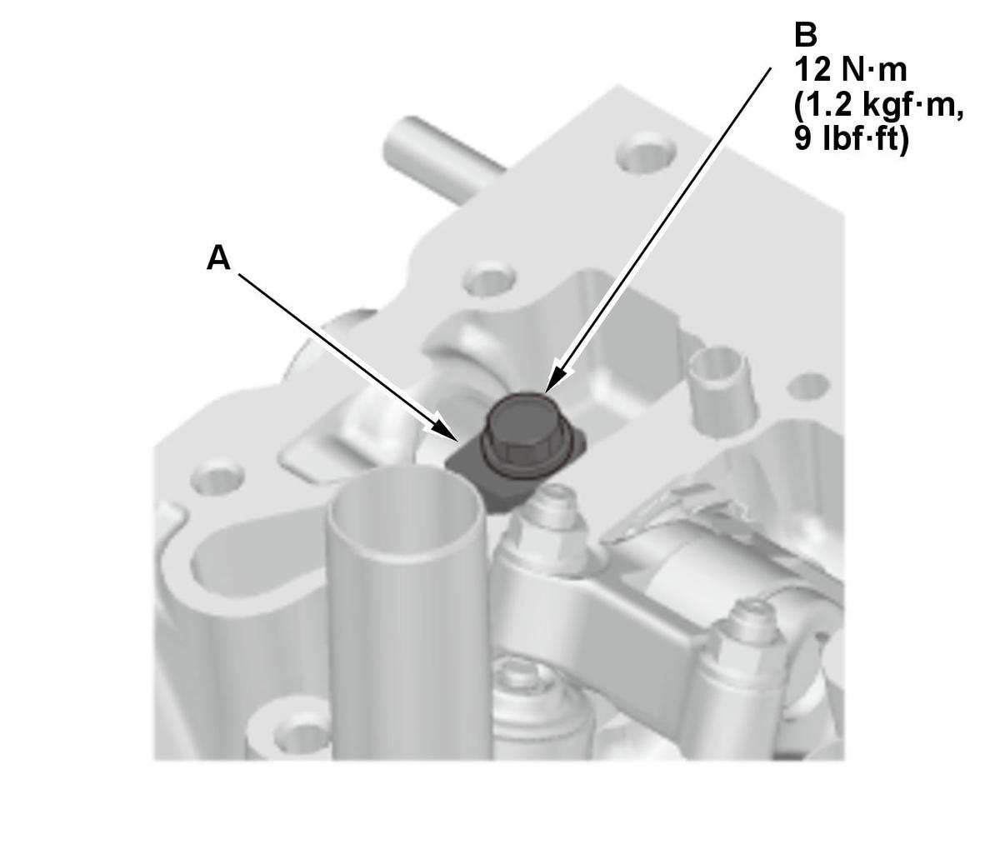
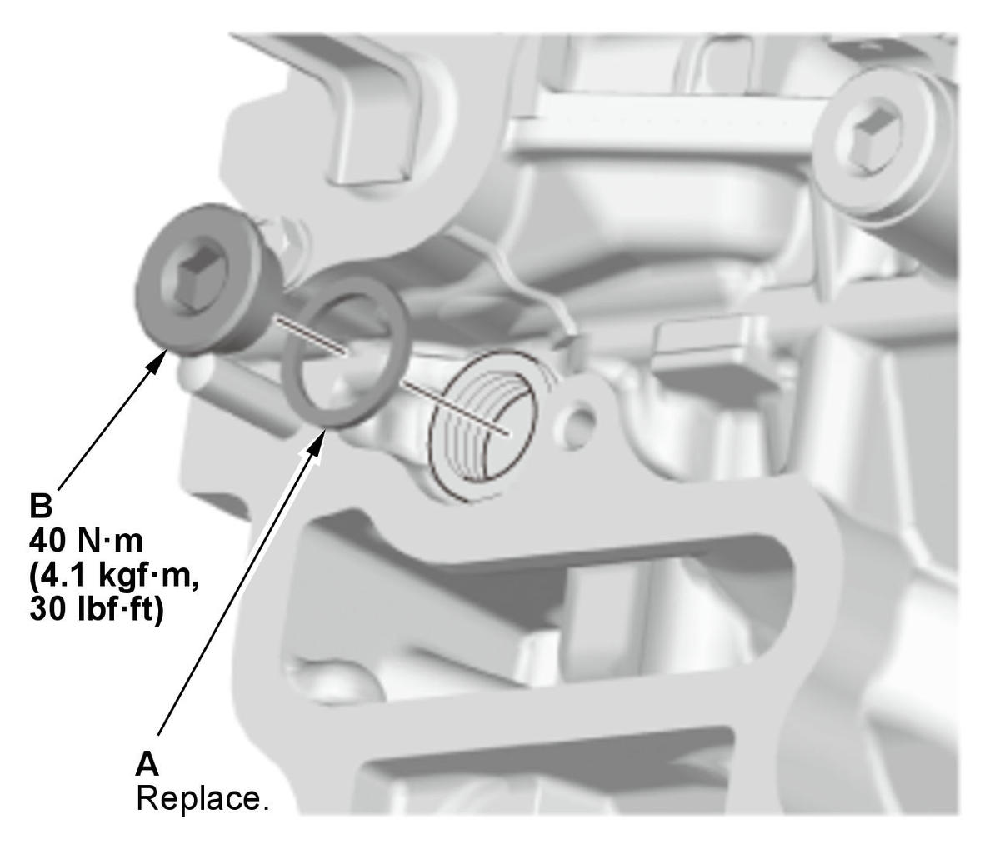
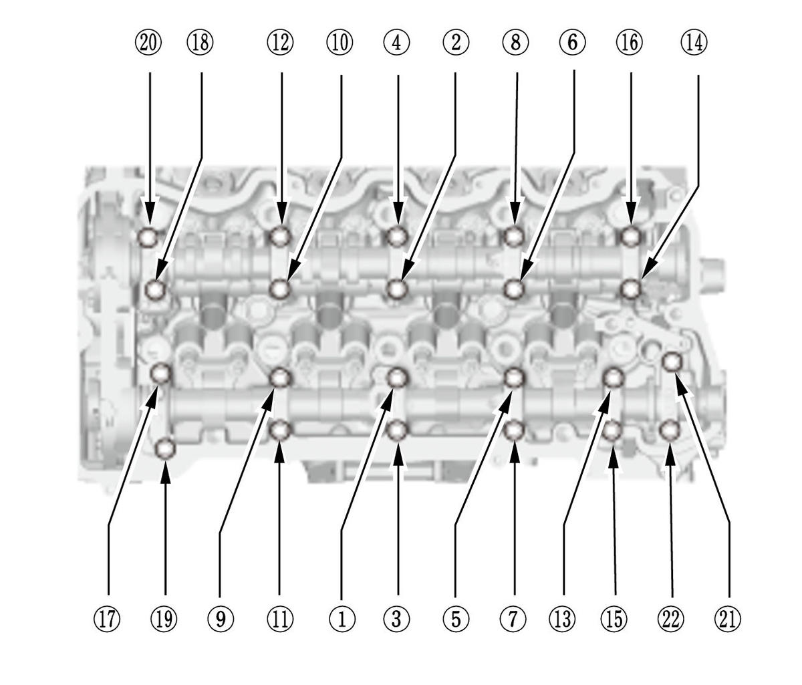
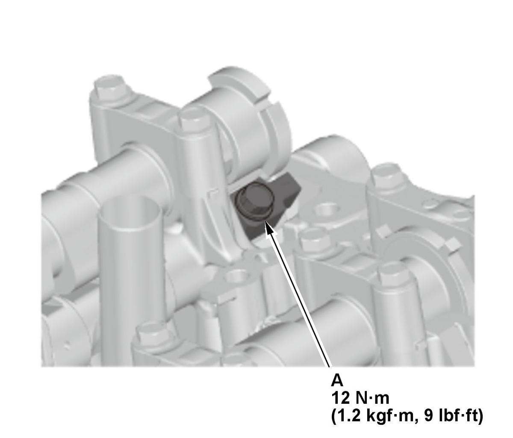
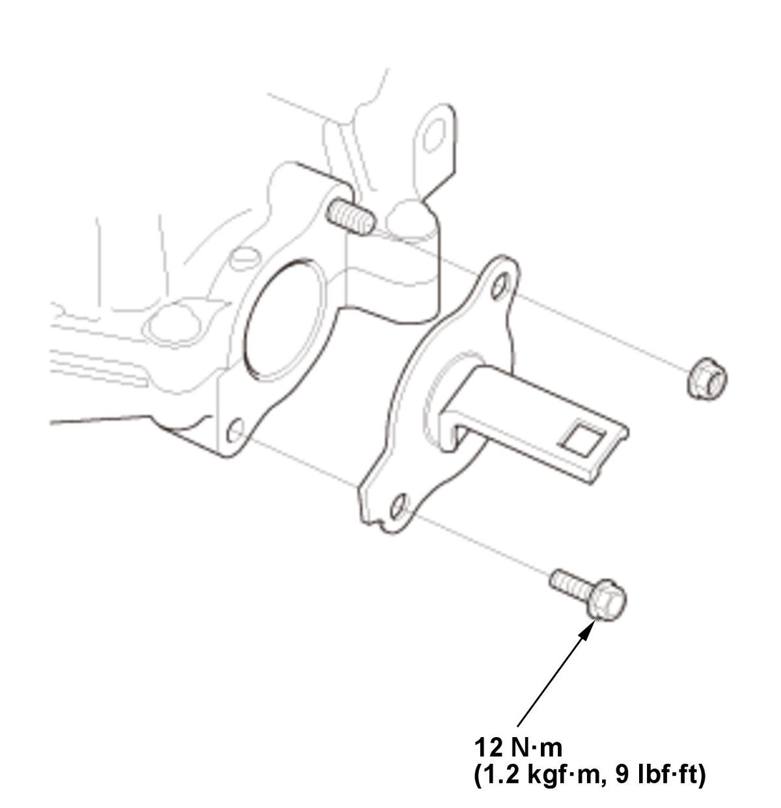

Rocker Arm Assembly Removal and Installation (K20C2): Installation
- Intake Rocker Arm Assembly - Reassemble
NOTE: If the intake rocker arm assembly is disassembled, reassemble the intake rocker arm assembly.
- Rocker Arm Assembly - Install
1. Install the exhaust rocker arm assembly (A), the thrust washers (B), and the exhaust rocker shaft (C). 
Courtesy of HONDA, U.S.A., INC.2. Install the exhaust rocker shaft cap (A) and the rocker shaft bolt (B). 3. Install the lost motions (A). NOTE: Apply new engine oil to the lost motion assembly.
4. Apply liquid gasket to the cylinder head mating surface of the No. 5 rocker shaft holder and to the inside edge of the threaded bolt holes.
5. Install the intake rocker arm assembly (B).

Courtesy of HONDA, U.S.A., INC.6. Apply new engine oil to a new washer (A). 7. Install the sealing bolt (B) with the new washer.
- No. 1 Piston at Top Dead Center - Set (Crank Side)
1. Turn the crankshaft so its white mark (A) on the crankshaft pulley lines up with the pointer (B) on the cam chain case. - Camshaft - Install
1. Install the intake camshaft (A). 2. Install the lower exhaust camshaft holders (B), then slide the exhaust camshaft (C) in at an angle to allow the cam chain to slip over the teeth.
3. Set the No. 1 piston at top dead center (TDC). The "UP" mark (A) on VTC actuator B should be at the top. Align the TDC marks (B) on VTC actuator A and VTC actuator B. The TDC marks (C) on VTC actuator B should line up with the top edge of the cam chain case (D). 4. Apply new engine oil to the camshaft journals and lobes on both cams.
- Camshaft Holder - Install
1. Apply new engine oil to the threads of the camshaft holder bolts. 2. Set the intake camshaft holders (A), the upper exhaust camshaft holders (C), and cam chain guide B in place.

Courtesy of HONDA, U.S.A., INC.3. Tighten the camshaft holder bolts, in sequence, to the specified torque. Specified Torque: 13 N.m (1.3 kgf.m, 10 lbf.ft) - Rocker Shaft Bolt - Tighten

Courtesy of HONDA, U.S.A., INC.1. If the intake rocker arm assembly is disassembled, tighten the rocker shaft bolt (A). - Cam Chain Auto-Tensioner - Install
- No. 1 Piston at Top Dead Center - Set (Crank Side)
1. Rotate the crankshaft clockwise so its white mark (A) on the crankshaft pulley lines up with the pointer (B) on the cam chain case. - No. 1 Piston at Top Dead Center - Check (Cam Side)
1. Check the No. 1 piston at top dead center (TDC). The "UP" mark (A) on VTC actuator B should be at the top. Align the TDC marks (B) on VTC actuator A and VTC actuator B. The TDC marks (C) on VTC actuator B should line up with the top edge of the cam chain case (D). - Valve Clearance - Adjust
- Side Cover - Install
1. Apply liquid gasket to the No. 5 rocker shaft holder mating surface of the side cover and to the inside edge of the threaded bolt holes. 2. Install the side cover (A).
- Camshaft Holder Cover - Install

Courtesy of HONDA, U.S.A., INC.1. Apply liquid gasket to the cylinder head mating surface of the camshaft holder cover and to the inside edge of the threaded bolt holes. 2. Install the camshaft holder cover.
- Harness Holder - Install
 Courtesy of HONDA, U.S.A., INC.
Courtesy of HONDA, U.S.A., INC.1. Install the harness holder (A). 2. Connect the ground cable (B).
- CMP Sensor B - Install
- CMP Sensor A - Install
- Thermostat Housing - Install
- Cylinder Head Cover - Install
- EVAP Canister Purge Valve - Install
- Intake Air Duct - Install
- Air Cleaner - Install
- 12 Volt Battery - Install
- Engine Coolant - Refill
- Ignition Timing - Inspect